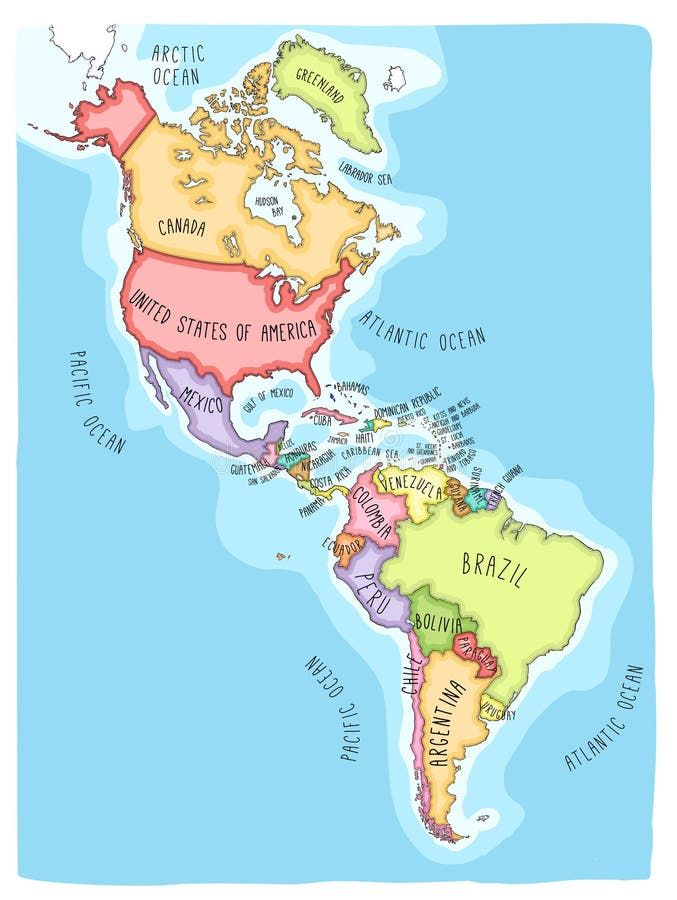
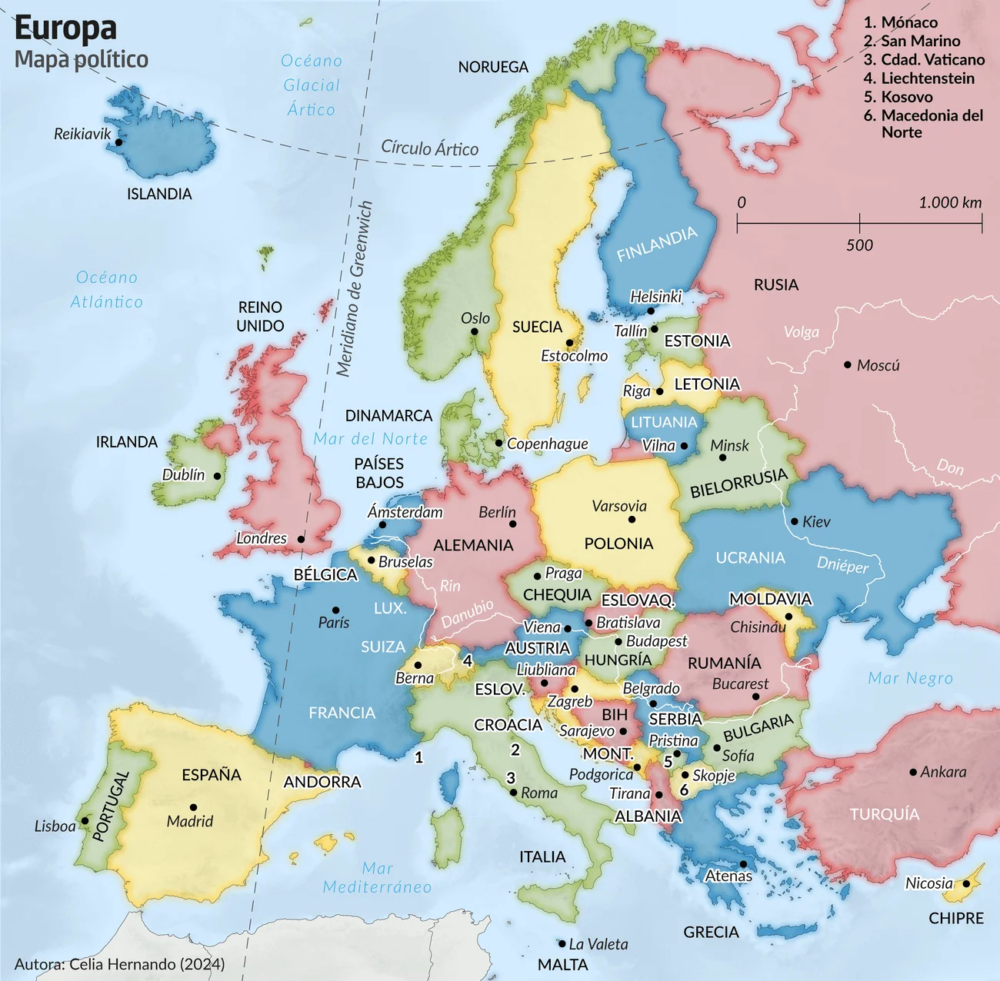
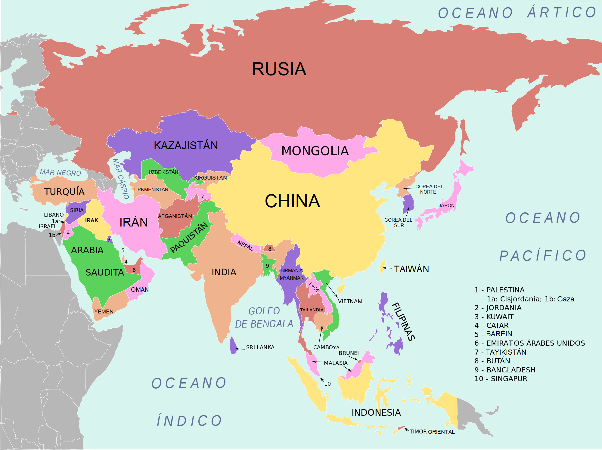
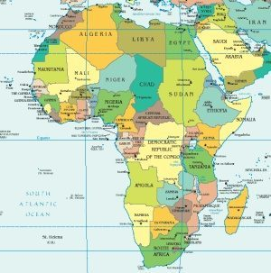
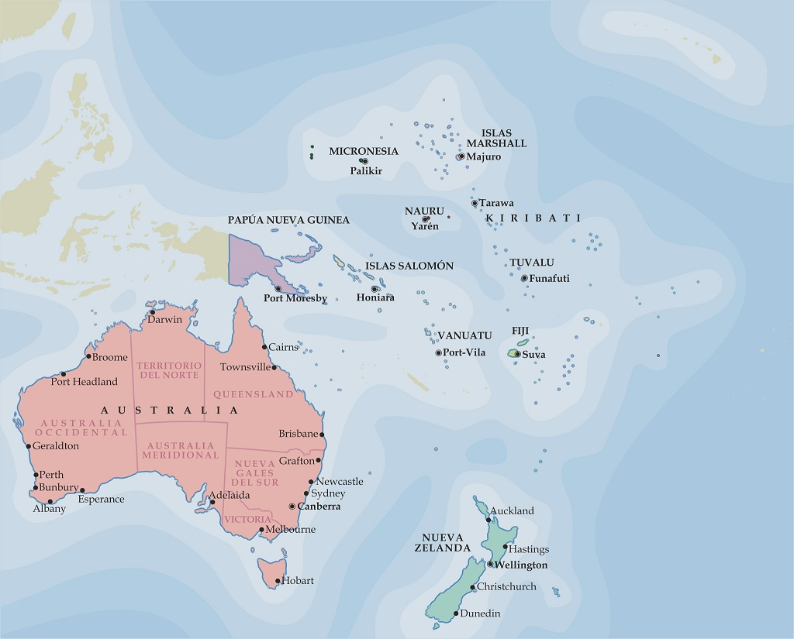

CONTINENTES |
| América |
Europa |
Asia |
África |
Ocenía |
Antártida |
- Canada
- Belice/li>
- Nicaragua
- Venezuela
- Chile
|
- Bulgaria
- Dinamarca
- Noruega
- Ucrania
- Irlanda
|
- Filipinas
- Armenia
- Bimaria
- Malasia
- Vietnam
|
- Ghana
- Angola
- Zimbabue
- Uganda
- Kenia
|
- Fiyi
- Nauru
- Tonga
- Nueva Zelanda
- Palaos
|
- La antartida Argentina (Argentina)
- La dependencia rosa( Nueva Zelanda)
- Adelia Land (Francia)
- Territorio antartico austriaco (Australia)
- Islandia Pedro 1 o Tierra de la Reina Maud(Noruega)
- Antartida Chilena(Chile)
- Marye Bird(sin pertenencia)
|
|  |
 |
 |
 |
 |
 |